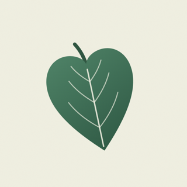
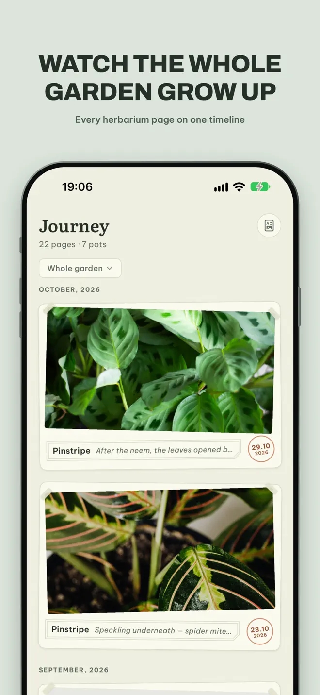
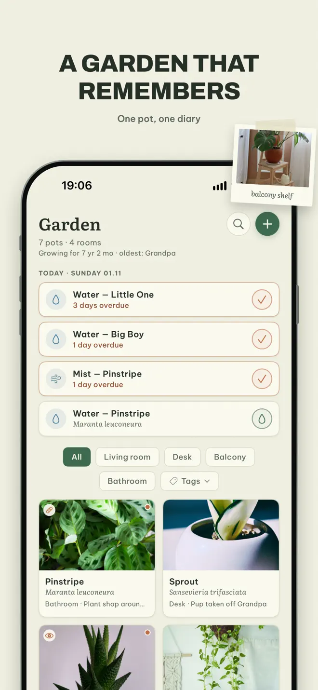
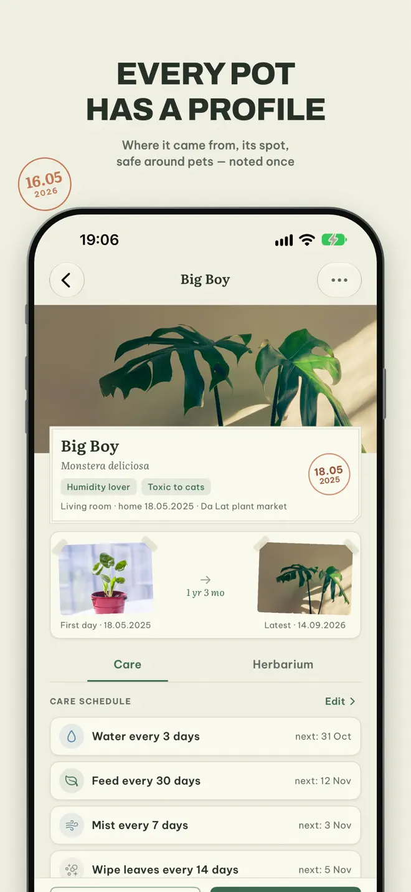
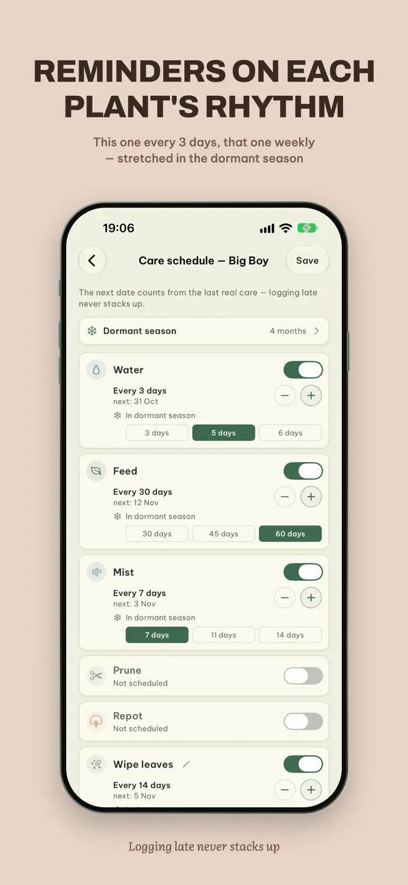

A plant is a slow thing. Keep the pages.
Plant Journal is a private notebook for the houseplants you grow at home. Each pot gets its own page, watering follows the plant's own rhythm, and every photo becomes a dated, pressed page — a timeline of the plant growing up.
iPhone and Android · No account · Everything lives on your phone



What it does
Care on the plant's own rhythm
A page for each pot
What it is, where you found it, who gave it to you, which windowsill it lives on, how much light it likes, whether it is toxic to pets.
Watering that does not pile up
This one every three days, that one once a week. The next date counts from the day you actually did it, and intervals stretch through the dormant months.
One reminder each morning
The day's work in a single line — “today: water the Monstera, mist the fern”. Name the jobs yourself: water, feed, mist, or whatever yours needs.
A photo timeline
Every photo becomes a pressed page, dated and labeled like a herbarium. Drag a slider between any two photos, or flip the album and watch it grow.
Pest log
A photo of the damaged leaf and what you did about it. The plant wears a tag — healthy, watching, treating — until it is itself again.
The year at a glance
Height and leaf count charted, this day a year ago, and a tally of every watering and every new arrival. Export the herbarium as a PDF.
How it works
Cuttings remember where they came from
Add a pot
Give it a page and a rhythm. A cutting keeps the name of the pot it came from.
Do the morning line
Water, mist or feed, and tick it off. A late watering never turns into debt.
Take a photo now and then
Leave it a season and it is a different plant. The timeline shows you.

Your data
Just you and the things you have grown
- No accounts. Nothing to sign up for.
- Everything lives on your phone and is exportable whenever you want it.
- No plant ID sending your garden to a server. You name your plants yourself.
- Optional backup to your own iCloud on iPhone.
Questions
Before you download
Does Plant Journal identify plants from photos?
No. It is a journal, not a plant identifier. You name your plants yourself and nothing is sent to a server.
How do watering reminders work?
Each plant has its own interval. One gentle reminder each morning gathers the day's jobs into a single line, and the next date counts from the day you actually watered.
Can I track more than watering?
Yes. Name the jobs yourself — water, feed, mist or anything else — and keep a pest log, height and leaf counts for each plant.
Do I need an account?
No. There are no accounts, and everything lives on your phone.
Can I export my plant journal?
Yes. Your data is exportable whenever you want it, and the photo herbarium exports as a PDF.
Which devices and languages does Plant Journal support?
iPhone (iOS 17 or later) and Android. The app is available in 12 languages: English, Arabic, Chinese, French, German, Hindi, Japanese, Korean, Portuguese, Russian, Spanish, Vietnamese.
- Made for
- People who grow houseplants and want a care journal and photo diary
- Platforms
- iPhone (iOS 17 or later) · Android
- Languages
- 12, including English, Arabic, Chinese, French, German, Hindi
- Category
- Lifestyle
- Developer
- Ho Van Dai
- Page updated